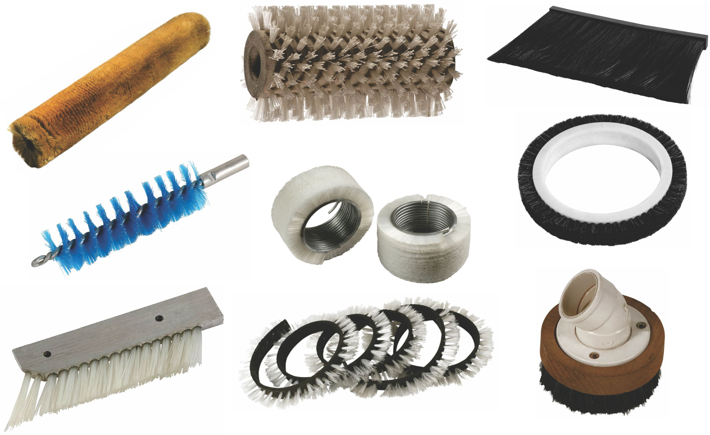

Proejtos Especiais
A LUVANO COLONIAL produz sob medida, qualquer produto de sua necessidade a partir de um projeto, desenho, croqui ou amostra. Encaminhe suas demandas ao nosso setor de projetos através de nosso contato ou redes sociais.
Nossa extensa linha de produtos é desenvolvida para atender às mais diversas necessidades técnicas e industriais, abrangendo todas as áreas da indústria, agropecuária, pavimentação e limpeza urbana. Produzidas com materiais de alta qualidade e durabilidade, nossas soluções são ideais para trabalhos pesados em ambientes industriais, oferecendo desempenho eficaz em processos de limpeza de espaços urbanos. Com produtos adaptados a diferentes superfícies e níveis de exigência, garantimos eficiência e resultados superiores em qualquer aplicação.
Escova principal
Escova lateral
Escova varredeira
ESCOVA P/ VC2000/2200
ESCOVÃO MECÂNICO
Escova tipo régua de cabelo animal
Escova tipo régua de pena de ganso
As escovas especiais desempenham um papel fundamental em diversos setores da indústria, oferecendo soluções personalizadas para uma ampla gama de aplicações. No desenvolvimento dessas escovas, como as helicoidais e sob medida, é essencial entender as necessidades específicas de cada setor para garantir eficiência, durabilidade e desempenho.
As escovas, vassouras e outros utensílios de limpeza são essenciais tanto para residências quanto para empresas, garantindo a higienização e o cuidado adequado dos ambientes. Esses itens são projetados para atender às necessidades de diferentes tipos de superfícies e sujidades, proporcionando eficiência na remoção de poeira, resíduos e sujeiras acumuladas.
A LUVANO COLONIAL produz sob medida, qualquer produto de sua necessidade a partir de um projeto, desenho, croqui ou amostra. Encaminhe suas demandas ao nosso setor de projetos através de nosso contato ou redes sociais.